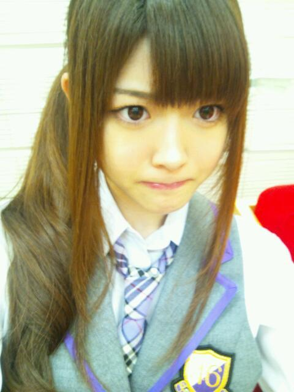

2012/0526Satだにだに〜っ(o・・o)
おはりんごっ(o・・o)
さゆりんごっ(o・・o)
最近、人生で初めて
東京の渋谷にある１０９なる
おしゃれなとこに
行ったりして
東京っぽいことを
してます松村です。
渋谷ってね、生駒じゃないけど
うちも怖くてな、
今までお仕事か電車の乗り換えくらいしか
行ったことなかったんよ〜ヽ(・∀・)ノ
その町にある１０９なる
おしゃれの巣窟みたいなところに
松村は行ってしまったのね。
みさみさと一緒に(￣▽￣)bグッ
どうでもええわって
思ったやろ〜(´；ω；`)
ちゃうんよ〜まっちゅんにとっては
一大発起やったんよ〜
感想〜？
おしゃれやった(・ω＜)☆
修学旅行生が沢山いた(・ω＜)☆うん
ほんで今日な〜
お料理番組やってて
チキンパエリア作ってたんよ〜
さゆりんも
つくれるなっ(￣▽￣)bグッ
めっちゃ美味しそうやった〜＼(^^)／
でもな〜
ああゆう番組って
玉ねぎとか、もう切ってあるやん〜
松村はそれが知りたいねんっ！
どう切ったらそうなるんよ！
それとも切ってへんのか！？
一瞬でそうなるんかえ！？
魔法的なそういうノリですか！？
ええい！
さゆりんごびーむぅぅぅっ(・ω＜)=☆
.........あっ
まつむら、今年で２０歳になります〜(・∀・)
取りあえず、川後さんに
魔法かけてもらってきます〜(・∀・)ノ
私の誕生日は
凄く重大な日になるようで...
皆さんに忘れられそうで悲しいのです。笑
ちなみに松村の誕生日8月27日です///
定期的に言うから！///
みんな忘れんでね(´；ω；`)！照
みくも、ななたろすw
お誕生日おめでとう！
気遣い抜群のお母さんみたいな美雲
ぺたぺたしちゃう妹みたいななーちゃん
大好きやでっ(*^^*)
いっぱい一緒に頑張ろな〜＼(^^)／
ほんで今日は
名古屋でミニ個別握手会です！
来てくださる皆さま
よろしくお願いします(*^^*)
このブログもテンション大丈夫かな〜...笑
では、またっ(o・・o)/~

2012/05/26 08:00
コメント(442)
渋谷はこわいですよね(笑)
テンションは大丈夫だとおもいます(^^)/
誕生日、しっかり覚えてます！ 握手会楽しんできて下さい。
テンションは大丈夫だとおもいます(^^)/
誕生日、しっかり覚えてます！ 握手会楽しんできて下さい。
さゆりいいいいいんんんん
昨日渋谷行ったのかぁ、それもみさみさと…
羨ましい( ´_ゝ｀)b
それも初109とは…渋谷案内してあげたい(´・ω・｀)←
え？チキンパエリア？作れる…？
どうやら俺の幻聴だったようだ
さゆりんごびーむぅぅぅっ(・ω＜)=☆
さゆりんご、20歳か～
今度さゆりんごラリアットかましてください
昨日渋谷行ったのかぁ、それもみさみさと…
羨ましい( ´_ゝ｀)b
それも初109とは…渋谷案内してあげたい(´・ω・｀)←
え？チキンパエリア？作れる…？
どうやら俺の幻聴だったようだ
さゆりんごびーむぅぅぅっ(・ω＜)=☆
さゆりんご、20歳か～
今度さゆりんごラリアットかましてください
お誕生日！
忘れるわけないぢゃあありませんか！
たぶん…
２〜３週間前ぐらいになったらまた
言ってください
まいやんみたいな晴れ着
写メおねがいしまス！
忘れるわけないぢゃあありませんか！
たぶん…
２〜３週間前ぐらいになったらまた
言ってください
まいやんみたいな晴れ着
写メおねがいしまス！
さゆりんの料理(笑)
乃木どこ懐かしいな(笑)
あれから料理できるようになったのかな・・・
ちょっとは進歩しないと女子力が・・・
もうあそこまでくると逆に天才かも(笑)
重大な日ってなんだ？？
結成1周年記念公演でもするのか？？？
21日で結成1周年だよねー
なんかサプライズあるのかなぁー
乃木どこ懐かしいな(笑)
あれから料理できるようになったのかな・・・
ちょっとは進歩しないと女子力が・・・
もうあそこまでくると逆に天才かも(笑)
重大な日ってなんだ？？
結成1周年記念公演でもするのか？？？
21日で結成1周年だよねー
なんかサプライズあるのかなぁー
ん～～～さゆりんごっ！
まっつんからまっつんへ
お元気でしょうか？？
玉ねぎはさゆりんごチョップで一発でみじん切りになるでw
名古屋ミニ握頑張ってね！
明日は会場のどこかにいるからね！
ほんなら、また～！
ワンワンッ
まっつんからまっつんへ
お元気でしょうか？？
玉ねぎはさゆりんごチョップで一発でみじん切りになるでw
名古屋ミニ握頑張ってね！
明日は会場のどこかにいるからね！
ほんなら、また～！
ワンワンッ
でた!さゆりんごビーム!!
多分みんなさゆりんごビームでタマネギきってるんだよ(笑)
さゆりんの誕生日忘れないって!
定期的に言われたら絶対忘れられないし(笑)
握手会がんばって
多分みんなさゆりんごビームでタマネギきってるんだよ(笑)
さゆりんの誕生日忘れないって!
定期的に言われたら絶対忘れられないし(笑)
握手会がんばって
待ってました、さゆりんー
久しぶりの更新だね！
握手会楽しんでね＼(^o^)／
久しぶりの更新だね！
握手会楽しんでね＼(^o^)／
さゆりんおはよーヽ(・∀・)ノ
さゆりんならできるはず！
まずは五目チャーハンだねww
握手会頑張って！
さゆりんならできるはず！
まずは五目チャーハンだねww
握手会頑張って！
今年20歳でそのテンションは・・・
さゆりんならOK？
さゆりんならOK？
さゆりん
バーン！
阿倍野の109やろ！
やっぱ(笑)
バーン！
阿倍野の109やろ！
やっぱ(笑)
さゆりんお疲れ( ´ ▽ ` )ﾉ
8/27ってさゆりんの誕生日以外に
何かあるの~(・・？））
たまねぎも切れないの！？
マジやばいなぁ((((；ﾟДﾟ)))))))
毎日外食ってことやんな？
体壊すよ・・・
ってことで、今日行くわ！！
8/27ってさゆりんの誕生日以外に
何かあるの~(・・？））
たまねぎも切れないの！？
マジやばいなぁ((((；ﾟДﾟ)))))))
毎日外食ってことやんな？
体壊すよ・・・
ってことで、今日行くわ！！
こんにち若月(笑)
デビューおめでとうございます！(*^^*)感想教えてください(^q^)今日まっつんのとこ行くからね♪
名古屋楽しんでください(^q^)
デビューおめでとうございます！(*^^*)感想教えてください(^q^)今日まっつんのとこ行くからね♪
名古屋楽しんでください(^q^)
お疲れ様です
遅くなりましたが先週の握手会ありがとうございました
今日は行けないので寂しいです
来月の個別も行けないので７月の全国握手会は頑張って行きます
では頑張ってください
遅くなりましたが先週の握手会ありがとうございました
今日は行けないので寂しいです
来月の個別も行けないので７月の全国握手会は頑張って行きます
では頑張ってください
玉葱も切れない
さゆりんごがかわいい(´◇`)
さゆりんごがかわいい(´◇`)
ぜったいに忘れんよ！
世間がざわざわしてても！
8月27日はさゆりんの日！！
さゆりんの誕生日のほうが大事！！！
世間がざわざわしてても！
8月27日はさゆりんの日！！
さゆりんの誕生日のほうが大事！！！
HTCのCMのメイキング観たよー！
さゆりんさゆりんさゆあっぽー！って面白かった！
8月27日って何の日だろう？？
3rdシングルかな―って思ったけど、月曜日だもんねえ
とりあえず誕生日はちゃんとお祝いするからね！
さゆりんさゆりんさゆあっぽー！って面白かった！
8月27日って何の日だろう？？
3rdシングルかな―って思ったけど、月曜日だもんねえ
とりあえず誕生日はちゃんとお祝いするからね！
さゆりんの作ったチキンパエリア食べてみたい！！！
さゆりんの作ったチキンパエリア食べてみたい！！！
むしろ手料理なら何でも食べてみたい！！！
むしろ手料理なら何でも食べてみたい！！！
誕生日お楽しみに～
さゆりん、おはりんご～
俺も大学行くようになって渋谷が定期圏内になってからは良く行くようになったよ～！
慣れれば怖くないと思うから渋谷来なよ～
もしさゆりん見かけたら声かけても良い？(^q^)笑
さゆりんがチキンパエリアを作る…？
まぁ料理ってさ、うまく作れるかどうかじゃなくて気持ちじゃん？どやっ
だからさゆりんが作った料理の試食会があったら絶対行く！
と思います。←
そうだね～！
さゆりんも今年で20歳だー
ちなみに俺もさゆりんと同じで誕生日は4月だからもうなったけど、20歳だよ＼(^o^)／
やっぱ10代から20代になっちゃうのは普通に年取るのよりなんか違うものを感じるよね…
そのすごく重大な日ってのめっちゃ気になるけど、さゆりんの誕生日は絶対に忘れない！！
さゆりんの誕生日は？
って聞かれたら8月27日！って答えられるし
8月27日は？
って聞かれたらさゆりんの誕生日って言えるわ 笑
笑
じゃあ名古屋ミニ個握頑張ってね！
ブログのテンション全然平気！
むしろそんなの気にしなくて良いんだよ～
ひろき。
俺も大学行くようになって渋谷が定期圏内になってからは良く行くようになったよ～！
慣れれば怖くないと思うから渋谷来なよ～
もしさゆりん見かけたら声かけても良い？(^q^)笑
さゆりんがチキンパエリアを作る…？
まぁ料理ってさ、うまく作れるかどうかじゃなくて気持ちじゃん？どやっ
だからさゆりんが作った料理の試食会があったら絶対行く！
と思います。←
そうだね～！
さゆりんも今年で20歳だー
ちなみに俺もさゆりんと同じで誕生日は4月だからもうなったけど、20歳だよ＼(^o^)／
やっぱ10代から20代になっちゃうのは普通に年取るのよりなんか違うものを感じるよね…
そのすごく重大な日ってのめっちゃ気になるけど、さゆりんの誕生日は絶対に忘れない！！
さゆりんの誕生日は？
って聞かれたら8月27日！って答えられるし
8月27日は？
って聞かれたらさゆりんの誕生日って言えるわ
じゃあ名古屋ミニ個握頑張ってね！
ブログのテンション全然平気！
むしろそんなの気にしなくて良いんだよ～
ひろき。
更新ありがとう♪
俺も今だに渋谷は慣れません(^_^;
てかさゆりん料理作れるの？(笑)
前の乃木どこで料理作ってたとき凄かったような・・・
俺も今だに渋谷は慣れません(^_^;
てかさゆりん料理作れるの？(笑)
前の乃木どこで料理作ってたとき凄かったような・・・
こんさゆりんご♪
１０９行ったんかー
渋谷とか都会すぎて疲れる(>_<)
こっち兵庫の田舎やから(笑)
さゆりんごビームで料理出来たらいいな♪
味はおいといて(笑)
１０９行ったんかー
渋谷とか都会すぎて疲れる(>_<)
こっち兵庫の田舎やから(笑)
さゆりんごビームで料理出来たらいいな♪
味はおいといて(笑)
さゆりんごヤッホー！
渋谷109といえば男子にもハードル高いよ。前に彼女の買い物に付き合わされて一度だけ行ったけど、正直苦手な雰囲気だった…。
誕生日は覚えておくよ。
心配ならこれから更新する度に「誕生日まであと何日！」みたいにカウントダウンしてみるのはどうかな？
渋谷109といえば男子にもハードル高いよ。前に彼女の買い物に付き合わされて一度だけ行ったけど、正直苦手な雰囲気だった…。
誕生日は覚えておくよ。
心配ならこれから更新する度に「誕生日まであと何日！」みたいにカウントダウンしてみるのはどうかな？
まいどおーきにー☆
航平やで！
さゆりんごも東京での生活
だいぶ慣れてきたんちゃう？
池袋とか新宿とか、
まだまだ楽しい所は
ようさんあるで(≧∇≦)
さゆりんごも
あと３ヶ月で20歳かぁ…
飲酒するん？(笑)
まぁ、握手会楽しんでな♪
バイりんご(^-^)/~~
航平やで！
さゆりんごも東京での生活
だいぶ慣れてきたんちゃう？
池袋とか新宿とか、
まだまだ楽しい所は
ようさんあるで(≧∇≦)
さゆりんごも
あと３ヶ月で20歳かぁ…
飲酒するん？(笑)
まぁ、握手会楽しんでな♪
バイりんご(^-^)/~~
えっ、そーなんですか～。言われてみるとプロフィールからもそげなキャラとはイメージ
できなかないですが（笑）マジなんでやんすな～。でも確かに一回目はなんかいけっかな～
って思ったりしますよね。おいらの場合はのっけから三谷さんの舞台を見に渋谷のPARCO
だったんですが、なんか思い出しましたね～（遠い目（笑））にしても画の制服なさゆりんまるも
可愛かでげすね～(゜o゜)＼(-_-)(☆＿☆)。ななせまるもあだ名が一杯あるんだがね～
料理はそーいう感じの解釈なんですな～さゆりんごって！(＾＾)！！(＾＾)！
白石さんなんかお上手そうですからお弟子さんにしてもらったら如何どす～（笑）
できなかないですが（笑）マジなんでやんすな～。でも確かに一回目はなんかいけっかな～
って思ったりしますよね。おいらの場合はのっけから三谷さんの舞台を見に渋谷のPARCO
だったんですが、なんか思い出しましたね～（遠い目（笑））にしても画の制服なさゆりんまるも
可愛かでげすね～(゜o゜)＼(-_-)(☆＿☆)。ななせまるもあだ名が一杯あるんだがね～
料理はそーいう感じの解釈なんですな～さゆりんごって！(＾＾)！！(＾＾)！
白石さんなんかお上手そうですからお弟子さんにしてもらったら如何どす～（笑）
おしゃれの巣窟って(笑)
今日の握手会ありがとう♪
やっぱり可愛い過ぎ(^-^ゞ
今もまだシュガーベリーの香りが♪♪♪
スパンコール付のピンクのシャツ着てたから少しは印象に残ってもらえたかなぁ(^-^ゞ
来週の大阪ミニ個別も行くから3週連続さゆりんに会えるなんて
定期的に言わなくてもさゆりんの誕生日忘れたりしないよ～♪
ってか重大な日って？
さゆりんご単推しのASAでした♪
さゆりんの手料理…
きょ、今日はお腹いっぱいだから
また今度いただきまーす！(笑)
きょ、今日はお腹いっぱいだから
また今度いただきまーす！(笑)
さゆりん こんにちはφ(≧∀≦*)
こんにちはφ(≧∀≦*)
初、渋谷だったんだね！
期待と不安があったそうで・・・

なんとなくわかる気がする(_ _(--;(_ _(--; ）うんうん
僕はずっと東京近辺に住んでいるけどさゆりんみたいに電車の乗換え
でしか行ったことがないよ～＞＜
恥ずかしいかなコレって？(笑)
池袋や原宿とかは時々行ったりするんですけどね(｡･･｡)
それと、えっ、、さゆりんが料理番組だってぇ～！？Σ(ﾟДﾟ；≡；ﾟдﾟ)
とにかく何でも気合ですよ(ノ)`ω'(ヾ)
あと、わかってます！
さゆりんの大切な誕生日の8月27日は絶対に忘れないように
しておくよ(*^-ﾟ)vｨｪｨ♪
だから安心してね＊
誕生日の日にカッコよくブログ更新するの待ってるよ(*>ω<*)
お祝いコメントしちゃいます
最後に、名古屋でミニ個別握手会楽しんできてね
それでは(・ω<)
またコメントします
 さ(ゆo・ω・oり)んGO！
さ(ゆo・ω・oり)んGO！
初、渋谷だったんだね！
期待と不安があったそうで・・・
なんとなくわかる気がする(_ _(--;(_ _(--; ）うんうん
僕はずっと東京近辺に住んでいるけどさゆりん
でしか行ったことがないよ～＞＜
恥ずかしいかなコレって？(笑)
池袋や原宿とかは時々行ったりするんですけどね(｡･･｡)
それと、えっ、、さゆりん
とにかく何でも気合ですよ(ノ)`ω'(ヾ)
あと、わかってます！
さゆりん
しておくよ(*^-ﾟ)vｨｪｨ♪
だから安心してね＊
誕生日の日にカッコよくブログ更新するの待ってるよ(*>ω<*)
お祝いコメントしちゃいます
最後に、名古屋でミニ個別握手会楽しんできてね
それでは(・ω<)
またコメントします
野菜切るのって難しいよね…
一人暮らしして母の偉大さを感じています(´⊆｀)
りんごちゃんは普段料理するの？
オレも今年の８月に20歳になるんだ(^O^)なかーま
でも27日は大変な日になりそうだね(>_<)
忘れずお祝いしたいと思います!
それじゃあ今日もがんばれ！
ノシ
一人暮らしして母の偉大さを感じています(´⊆｀)
りんごちゃんは普段料理するの？
オレも今年の８月に20歳になるんだ(^O^)なかーま
でも27日は大変な日になりそうだね(>_<)
忘れずお祝いしたいと思います!
それじゃあ今日もがんばれ！
ノシ
やっヽ(´ー｀)ノ
109とか行ってたんだー
俺はまだ行ったことないんだよー(-_-;)
さゆりん、こんど連れてってくれー(*^O^*)
大学は東京行くからそしたらぼくも109デビューしようかな？
さゆりんの誕生日を忘れるわけないよ(^3^)/
だってさゆりんの誕生日が俺のケータイのパスワードだもん!!
誕生日はプレゼント送るから待っててねヾ(^▽^)ノ料理番組の放送っていつ!?
ではまたコメントしますねヾ(^▽^)ノ
109とか行ってたんだー
俺はまだ行ったことないんだよー(-_-;)
さゆりん、こんど連れてってくれー(*^O^*)
大学は東京行くからそしたらぼくも109デビューしようかな？
さゆりんの誕生日を忘れるわけないよ(^3^)/
だってさゆりんの誕生日が俺のケータイのパスワードだもん!!
誕生日はプレゼント送るから待っててねヾ(^▽^)ノ料理番組の放送っていつ!?
ではまたコメントしますねヾ(^▽^)ノ
さゆりんごのブログおもしろいΣ（・□・；）
個別がんばって！
個別がんばって！
さゆりんご〜(o・・o)
今からミニ個別いくよおーーー
ドキドキ*･゜ﾟ･*:.｡..｡.:*･'(*ﾟ▽ﾟ*)'･*:.｡. .｡.:*･゜ﾟ･*
_
今からミニ個別いくよおーーー
ドキドキ*･゜ﾟ･*:.｡..｡.:*･'(*ﾟ▽ﾟ*)'･*:.｡. .｡.:*･゜ﾟ･*
_
久々のｺﾒ！！！！
よっ！！！
俺ね浪人生活を乗り越え
やっと今年大学生になってんよ！！
故に俺も今年で二十歳！！
6月25日お祝いしてね！！！
上京してきて今一人暮らしなう
さゆりんよりも家事だってできるぜｗｗ
玉ねぎの切り方がわからない？？
そんなの簡単だ！！
俺が教えてやんよ！！
玉ねぎの上の絞られた部分と根っこのところを切り落として
半分にして根っこの方の固い部分を包丁を違う角度から
斜めに入れて落とす
で少しだけ切らないとこを残して
縦と横から奥に切って
最後に横向きにおいて縦のやつと格子状になるように切ると
みじん切りはできんだな
これが！！！
って説明下手すぎて全然わからん・・・
半月切りは丸い部分の角度に合わせて包丁を入れるだけ！！！
これは簡単に説明できるなｗｗ
まっ頑張りたまえ！！
上からｗｗｗ
さかちょん
よっ！！！
俺ね浪人生活を乗り越え
やっと今年大学生になってんよ！！
故に俺も今年で二十歳！！
6月25日お祝いしてね！！！
上京してきて今一人暮らしなう
さゆりんよりも家事だってできるぜｗｗ
玉ねぎの切り方がわからない？？
そんなの簡単だ！！
俺が教えてやんよ！！
玉ねぎの上の絞られた部分と根っこのところを切り落として
半分にして根っこの方の固い部分を包丁を違う角度から
斜めに入れて落とす
で少しだけ切らないとこを残して
縦と横から奥に切って
最後に横向きにおいて縦のやつと格子状になるように切ると
みじん切りはできんだな
これが！！！
って説明下手すぎて全然わからん・・・
半月切りは丸い部分の角度に合わせて包丁を入れるだけ！！！
これは簡単に説明できるなｗｗ
まっ頑張りたまえ！！
上からｗｗｗ
さかちょん
おはりんごーー（＾Ｏ＾）
東京怖いよねー（´・ω・｀)
地元住みの自分にはあの人の量はきつい！
もはや,人い過ぎて1人くらい知り合いいるんじゃないかって時たま捜してしまうー
これあるあるじゃないんかなー、わら
チキンパエリアわらわら
そうだね！五目チャーハンと同じようなもんだしね(^w^)
玉ねぎは切ると涙でるからねー、
さゆりんの切ってるとこ見てみたい！(@￣ρ￣@)
あっちゃんがAKB卒業する日だっけー?
でも,そんなん関係ない！！(^ー゜)
あ、でもそんなの関係ねぇ！！笑
絶対忘れない！きっと！！わら
8月27日はさゆりんの誕生日！！
めいっぱいお祝いしたいです＼(^o^)／！！
今日もがんばってヾ(＠⌒ー⌒＠)ノ
早く握手会行きたい！！！
東京怖いよねー（´・ω・｀)
地元住みの自分にはあの人の量はきつい！
もはや,人い過ぎて1人くらい知り合いいるんじゃないかって時たま捜してしまうー
これあるあるじゃないんかなー、わら
チキンパエリアわらわら
そうだね！五目チャーハンと同じようなもんだしね(^w^)
玉ねぎは切ると涙でるからねー、
さゆりんの切ってるとこ見てみたい！(@￣ρ￣@)
あっちゃんがAKB卒業する日だっけー?
でも,そんなん関係ない！！(^ー゜)
あ、でもそんなの関係ねぇ！！笑
絶対忘れない！きっと！！わら
8月27日はさゆりんの誕生日！！
めいっぱいお祝いしたいです＼(^o^)／！！
今日もがんばってヾ(＠⌒ー⌒＠)ノ
早く握手会行きたい！！！
夕方だけだけどにぎにぎしに行くね
さゆりん俺にパエリア作って！
言われなくてもさゆりんの誕生日は覚えてるよ！
今日は頭が回らないから
短いけど五面ね！
握手会頑張ってね
あっいまやってるか
じゃあね♪
言われなくてもさゆりんの誕生日は覚えてるよ！
今日は頭が回らないから
短いけど五面ね！
握手会頑張ってね
あっいまやってるか
じゃあね♪
さゆりんご更新ありがと(*^^*)
すごい楽しみにしてたよ♪♪
忙しいのに更新して偉いね！！
体調に気をつけて頑張ってね(^o^)
さゆりん頻繁に渋谷とかいそうなのにな♪♪
またコメントするからね＼(^o^)／
すごい楽しみにしてたよ♪♪
忙しいのに更新して偉いね！！
体調に気をつけて頑張ってね(^o^)
さゆりん頻繁に渋谷とかいそうなのにな♪♪
またコメントするからね＼(^o^)／
1部お疲れ様でした！
うち、会場まで行ったんですけど、
さゆりんと握手できなかったんですよ泣泣泣
でもでも、
お姉ちゃんにうちの分のさゆりんとの握手してきてもらったんで、良かったです(^o^)/
次は絶対行くんで、その時ゎ構ってくださいっ♪照
あっこっちゃんって名前覚えてくれると、
めちゃめちゃテンション上がりますっっｗ
さゆりんめっちゃ大好き(はあと)
うち、会場まで行ったんですけど、
さゆりんと握手できなかったんですよ泣泣泣
でもでも、
お姉ちゃんにうちの分のさゆりんとの握手してきてもらったんで、良かったです(^o^)/
次は絶対行くんで、その時ゎ構ってくださいっ♪照
あっこっちゃんって名前覚えてくれると、
めちゃめちゃテンション上がりますっっｗ
さゆりんめっちゃ大好き(はあと)
おぉ！ついに109デビューですか♪
何買ったのかな？
洋服なら、今度見せてね♪(*^^*)
何買ったのかな？
洋服なら、今度見せてね♪(*^^*)
さゆりん誕生日覚えたよ♪
もう忘れんけん!!
名古屋の握手会頑張って(^_^)/
もう忘れんけん!!
名古屋の握手会頑張って(^_^)/
こんにちは、さゆりんごo(^o^)o
初渋谷109ですか！
意外やなぁ…
さゆりんごはおしゃれなんで、常に行ってると思ってたから！
誕生日忘れるわけないですよ(^-^)v
ちゃんとインプットしてあるから安心してね!!
今日のミニ握手会は行けないけど頑張ってなぁ！
でも明日の渋谷ヒカリエホールのおしゃれ学園祭は参加するのでよろしく(*⌒▽⌒*)
では、またコメするね！
バイ奈良(^-^)/~~
初渋谷109ですか！
意外やなぁ…
さゆりんごはおしゃれなんで、常に行ってると思ってたから！
誕生日忘れるわけないですよ(^-^)v
ちゃんとインプットしてあるから安心してね!!
今日のミニ握手会は行けないけど頑張ってなぁ！
でも明日の渋谷ヒカリエホールのおしゃれ学園祭は参加するのでよろしく(*⌒▽⌒*)
では、またコメするね！
バイ奈良(^-^)/~~
さ・ゆ・り・んヾ(≧∇≦)
俺も今年で二十歳だよ～(￣∇￣)
てことは同い年でーす♪
ちなみに9月20日だよ☆
同じおとめ座笑
ついにさゆりんも東京を知ったか～！ww
東京に住んでおきながら俺も2回くらいしか
行ったことない(；´Д｀)
なんか人多すぎてやだ笑
そうゆうことでさゆりん今日も頑張ってね(｀･ω･´)！
好きだぜさゆりん( ´艸｀)♡
卒業の日が、決まって あれっ?さゆりんの誕生日だと直ぐに気がつきました。
ある意味、みんなに覚えてもらえてラッキーじゃないかな?
『偶然を言い訳にして』渋谷が舞台になってるからNHKまで歩いてみると良いと思いますよ。
ある意味、みんなに覚えてもらえてラッキーじゃないかな?
『偶然を言い訳にして』渋谷が舞台になってるからNHKまで歩いてみると良いと思いますよ。
さゆりんごちゃま( ´･ω･`)_且~~ ｲｶｶﾞ?
おはラッキー☆チキンパエリアーチョーウマタウロスですよね!!!玉ねぎは大体切ってありますよねwww8月27日が20歳のお誕生日なんですね～覚えますたwwみさみさちゃんと一緒に109っング～とってもテンションアゲプニーだったようでhappyでしたね!!!髪型バターロールパンだぁwww
ε=ε=ε=ε=ε= ヽ(*･ω･)ﾉ ﾀﾀﾀﾀ･･･｡ﾟ．☆ ﾄﾞﾛﾝ♪
おはラッキー☆チキンパエリアーチョーウマタウロスですよね!!!玉ねぎは大体切ってありますよねwww8月27日が20歳のお誕生日なんですね～覚えますたwwみさみさちゃんと一緒に109っング～とってもテンションアゲプニーだったようでhappyでしたね!!!髪型バターロールパンだぁwww
ε=ε=ε=ε=ε= ヽ(*･ω･)ﾉ ﾀﾀﾀﾀ･･･｡ﾟ．☆ ﾄﾞﾛﾝ♪
好きすぎてツライ・・・
マルキュー行ったんだ＼(^o^)／
俺もあそこは緊張する！
男だからだけどwww
何か買ったのカナ？
料理は俺は昔レストランで働いてたから野菜切るのも得意( *｀ω´)ドヤッ
野菜を早く綺麗に切る勝負とかしてたよ。
さゆりんの誕生日8/27か！覚えたよ！
まいやんが8/20だから一週間後だね。
そして俺が8/21に誕生日(笑)
そう！乃木坂の結成日なのだ( *｀ω´)ドヤッ
俺もあそこは緊張する！
男だからだけどwww
何か買ったのカナ？
料理は俺は昔レストランで働いてたから野菜切るのも得意( *｀ω´)ドヤッ
野菜を早く綺麗に切る勝負とかしてたよ。
さゆりんの誕生日8/27か！覚えたよ！
まいやんが8/20だから一週間後だね。
そして俺が8/21に誕生日(笑)
そう！乃木坂の結成日なのだ( *｀ω´)ドヤッ
初めて渋谷に来た女の子ってみんなコワいって聞くなぁ。
さゆりんチャーハンのイメージあるし、あれから腕上げたんか気になるわ。
ハタチか・・・大人っぽいしあまり誕生日意識せんかもm(__)m
さゆりんごパンチ！！
・・・ってされそうやな(¨；)
さゆりんチャーハンのイメージあるし、あれから腕上げたんか気になるわ。
ハタチか・・・大人っぽいしあまり誕生日意識せんかもm(__)m
さゆりんごパンチ！！
・・・ってされそうやな(¨；)
渋谷いいなぁ…
行ったことないけん行ってみたい!!
今から大阪から東京行くけどね(笑)
さゆりんの誕生日はバッチリ覚えてるよ(^o^)／
誕生日近い握手会あれば絶対行く☆
行ったことないけん行ってみたい!!
今から大阪から東京行くけどね(笑)
さゆりんの誕生日はバッチリ覚えてるよ(^o^)／
誕生日近い握手会あれば絶対行く☆
109って寧ろさゆりんにピッタリな場所なんじゃ…←ぇ
さゆりんおしゃれだしね～
さゆりんの誕生日もちろん覚えとくよ!!
それにしても最後の写メ可愛すぎるわぁ～
セピアより


さゆりん109似合ってると思うよ！笑
定期的に行けばなれるんじゃない？
写メ可愛いわ(｡≧ω≦)ﾉ
これからも、がんばって!!
☆☆☆(なお・ω・やん)☆☆☆